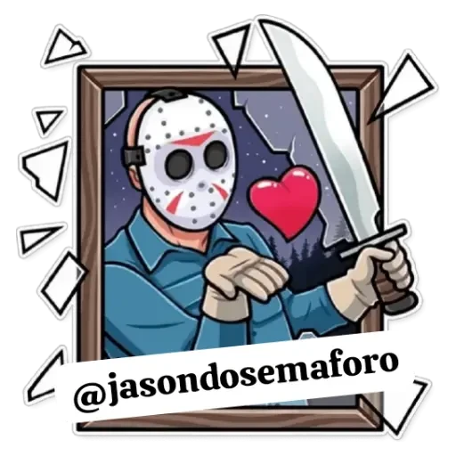

O seu medo é o meu riso. O seu riso é o meu medo.
Tudo começou como uma brincadeira, inspirada por um evento de cosplay em Santa Maria, RS. Sem um traje formal, a criatividade do senhor Marcio Campana deu vida ao personagem: uma máscara encontrada em casa, roupas velhas cortadas e tingidas de vermelho com um spray. Assim surgiu o primeiro Jason.
Durante o evento, a performance chamou a atenção, e um amigo sugeriu que ele "atuasse" como o Jason real. Essa observação foi o catalisador. O senhor Marcio dedicou-se a uma maratona de filmes, estudando os movimentos e a presença do personagem. Foi nesse processo de aprimoramento que o "Jason" nasceu, substituindo a antiga identidade de "Campana" para se dedicar à interpretação do ícone do terror em festas, formaturas e eventos de fantasia.
O personagem se tornou uma figura conhecida em Santa Maria, especialmente em sextas-feiras 13, quando se apresentava nos semáforos da cidade. As noites de sexta-feira 13 também eram dedicadas ao bar do Gárgula, onde a performance continuava. Em 2008, o Jason teve uma longa temporada como "estátua viva" na praça de Santa Maria, de novembro a fevereiro.
O sucesso do personagem se expandiu para outros eventos, incluindo o carnaval das tunas em fevereiro de 2016 e diversas participações em eventos no Rio Grande do Sul. A partir de 2022, o personagem Jason fixou residência em Santa Catarina, onde segue atuando.
Vai fazer uma festa de 15 anos, aniversário, casamento, festa de fim de ano, Halloween ou evento da empresa?
Já pensou em deixar esses eventos muito mais divertidos? Com o Jason do Semáforo, sua festividade será diferente e cheia de sustos. Uma forma de animação diversificada e garantida para deixar seu evento ainda mais especial.
O Jason, o animador, transformando sua celebração em uma experiência inesquecível.
Entre em contato e agende sua data!
ESTAMOS ANSIOSOS PARA INICIAR UM PROJETO COM VOCÊ!
+55 55 9191-0911
mac.marciocampana@gmail.com
Seg - Sex: 10h - 20h
Sáb, Dom: Fechado